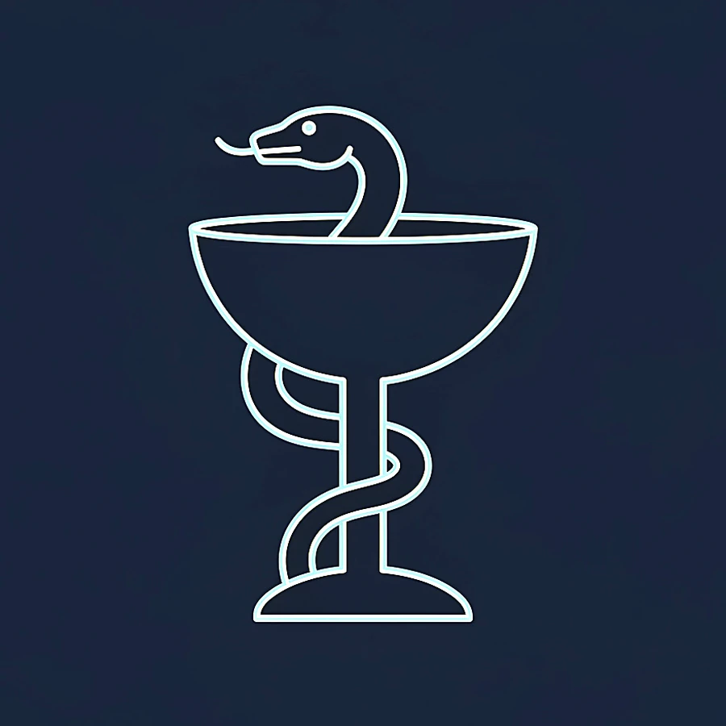

Электронная почта
hello@pamatimilis.comОтвечаем в течение рабочего дня
Медицинский справочник · 8 нозологий
Создано Тимуром и нейросетями

Восемь заболеваний, объяснённых просто и точно — от психиатрии до неонатологии.
К содержанию01 — Каталог
Восемь состояний, которые чаще всего ищут в медицинских справочниках. Нажмите на изображение, чтобы открыть крупную иллюстрацию и описание заболевания.
02 — Связь
Сейчас здесь тестовые данные — мы только готовим справочник к запуску. Пишите, если нашли неточность или хотите предложить тему.
Электронная почта
hello@pamatimilis.comОтвечаем в течение рабочего дня
Телефон
+7 (900) 000-00-00Пн–Пт, 9:00–18:00 (МСК)
Редакция
г. Москва, ул. Примерная, 1
Вход со стороны двора
Научный редактор
Тимур
Медицинский контент и проверка фактов
Есть вопрос по материалам справочника?
Написать нам